Query adalah sarana untuk mengatur data yang disimpan dalam tabel, sehingga hanya data-data tertentu yang akan dimunculkan dalam tabel.
Query bisa diartikan sebagai pernyataan /permintaan yang diberikan oleh user untuk mengambil informasi yang tersimpan dalam database. Fungsi dari Query adalah untuk menyaring dan menampilkan data dari berbagai criteria dan urutan yang kita kehendaki.
Cara membuat query ada 3 yaitu:
- Create query in design view
- Create query by using wizard
- SQL View
Query dibedakan menjadi 3, yaitu :
- DDL ( Data Definition Language ) digunakan untuk membuat atau mendefinisikan obyek-obyek database seperti membuat tabel, relasi antar tabel dan sebagainya.
- DML ( Data Manipulation Language ) digunakan untuk manipulasi database, seperti : menambah, mengubah atau menghapus data serta mengambil informasi yang diperlukan dari database.
- DCL ( Data Control Language ) merupakan sub bahasa SQL yang digunakan untuk melakukan pengontrolan data dan server databasenya.
Untuk membuat query, klik tab create dan pilih query wizard atau query design
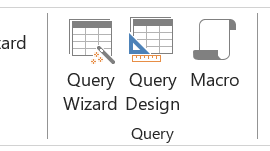- Query Wizard: Query Wizard adalah alat bantu yang mudah digunakan untuk membuat kueri tanpa harus menulis kode SQL. Kamu cukup memilih tabel yang ingin kamu kueri dan kolom yang ingin kamu tampilkan, dan Query Wizard akan membuat kueri untukmu.
- Query Design: Query Design adalah alat yang lebih canggih yang memungkinkan kamu untuk membuat kueri yang lebih kompleks. Kamu dapat menentukan kriteria yang lebih rumit, seperti kriteria yang melibatkan beberapa tabel atau kriteria yang menggunakan fungsi agregat.
Query dengan SQL View
SELECT
Perintah SQL untuk menampilkan data memiliki cara penulisan sebagai
berikut :
SELECT * | [ kolom1,kolom2,...] FROM
- SELECT artinya memilih kolom atau field mana yang akan ditampilkan dapat berupa list kolom, suatu persamaan (operasi aritmatika), fungsi, obyek tertentu.
- Dapat diketikkan * yang artinya menampilkan semua field yang dimiliki oleh table tersebut
- FROM menunjukkan nama Tabel yang akan ditampilkan.
- WHERE untuk meletakkan definisi kondisi penyaringan
Berikut contoh query dan perintah SQL untuk penyelesaiannya
- Query : Tampilkan semua kolom yang ada pada table pegawai SELECT * FROM pegawai;
- Query : Tampilkan kode buku dan judulnya SELECT kodebuku, judul FROM buku;
- Query : tampilkan nama semua anggota yang berinisialisasi JONI SELECT * FROM anggota WHERE nama LIKE ‘JONI%’;
Wildcard Pada Accees
- 1. Asterisk (*): Wildcard ini digunakan untuk mewakili nol atau lebih karakter. Contoh: Jika kamu mencari "a*", hasilnya akan mencakup semua kata yang dimulai dengan huruf "a", seperti "apple", "ant", dan "aroma".
- 2. Question Mark (?): Wildcard ini digunakan untuk mewakili satu karakter tunggal. Contoh: Jika kamu mencari "b?g", hasilnya akan mencakup kata-kata seperti "bag", "big", atau "bug", tetapi tidak termasuk "baggage" karena ada lebih dari satu karakter di antara "b" dan "g".
- 3. Brackets ([]): Wildcard ini digunakan untuk menentukan satu karakter dari sekumpulan karakter yang diizinkan. Contoh: Jika kamu mencari "[aeiou]", hasilnya akan mencakup semua huruf vokal tunggal: "a", "e", "i", "o", "u".
- 4. Exclamation Mark (!): Digunakan di dalam tanda kurung untuk menunjukkan karakter yang tidak diinginkan. Contoh: Jika kamu mencari "[!aeiou]", hasilnya akan mencakup semua karakter yang bukan huruf vokal, seperti "b", "c", "d", dan seterusnya.
- 5. Hyphen (-): Digunakan di dalam tanda kurung untuk menunjukkan rentang karakter. Contoh: Jika kamu mencari "[a-z]", hasilnya akan mencakup semua huruf kecil dari "a" hingga "z".
- 6. Hash (#): Wildcard ini digunakan untuk mewakili satu karakter numerik. Contoh: Jika kamu mencari "##", hasilnya akan mencakup semua kombinasi dua digit angka, seperti "12", "45", atau "99".
Langkah membuat Query
Data Mobil
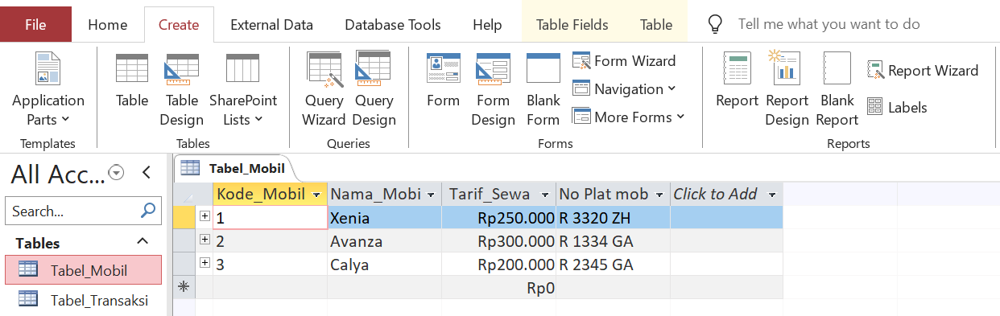Data Transaksi
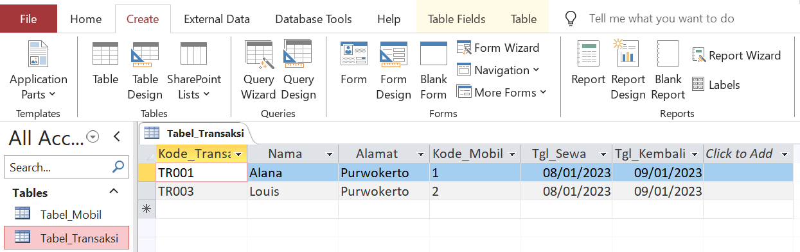Query
Perintah: Tampilkan semua data mobil dan transaksii
Query
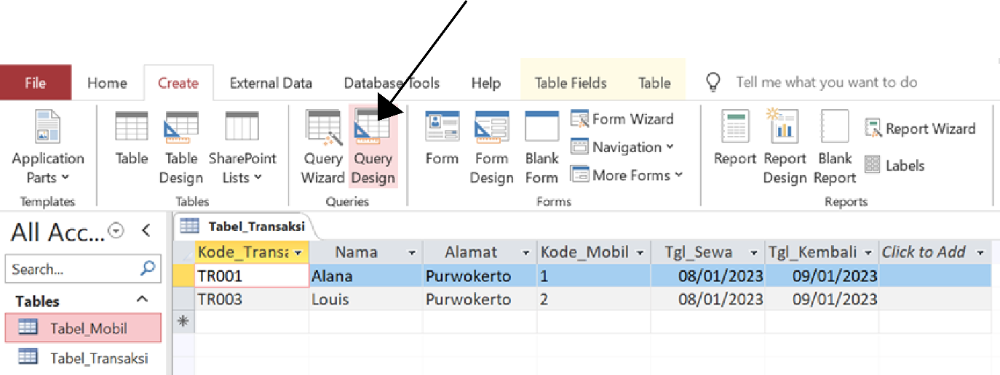Query
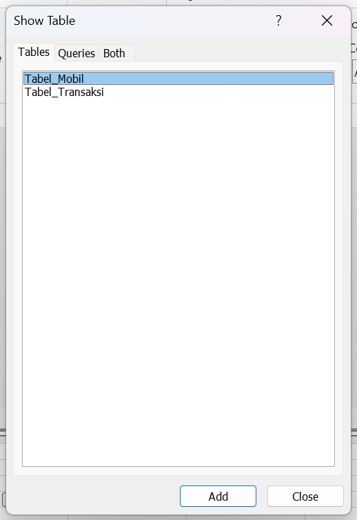Query
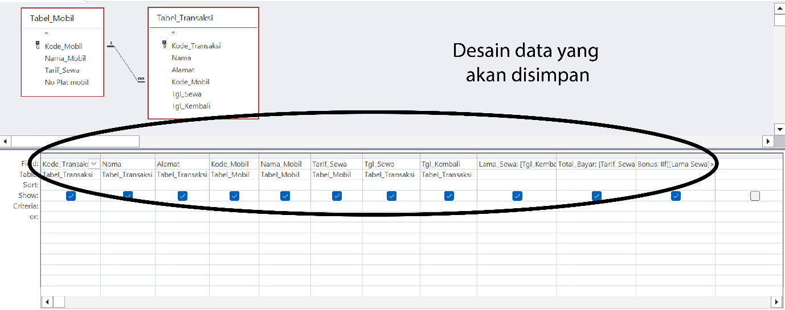Proses Pembuatan Query
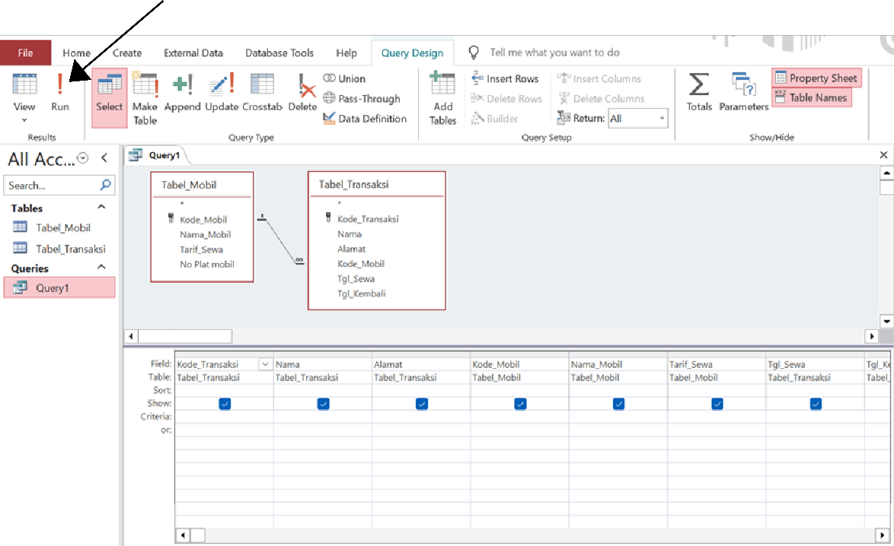Hasil Query
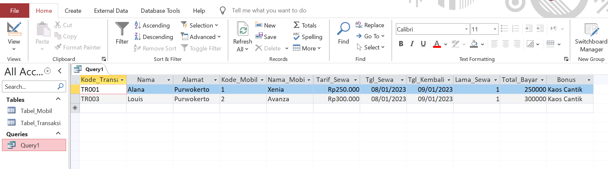Melihat Perintah SQL
Klik kanan pada Query1 lalu pilih SQL View
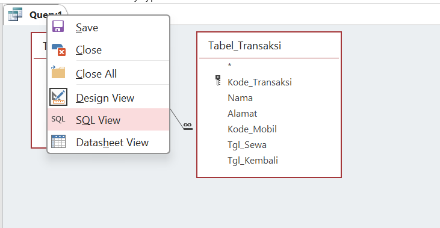Melihat Perintah SQL
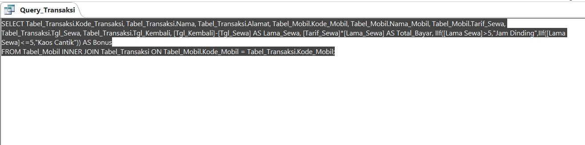Query dengan Kriteria Perintah
Tampilkan data mobil avanza
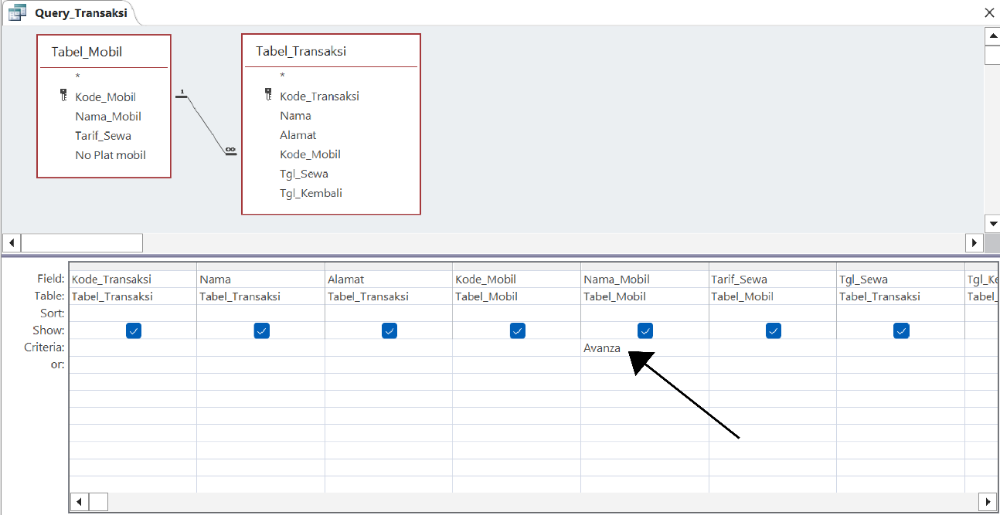Hasil Query dengan Kriteria
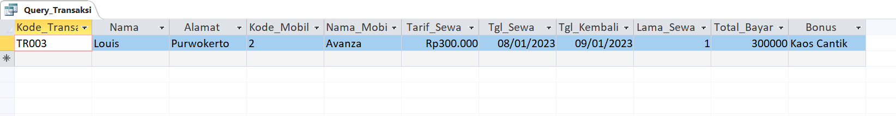Menyimpan Query
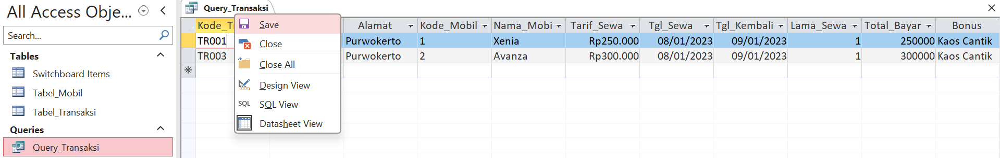